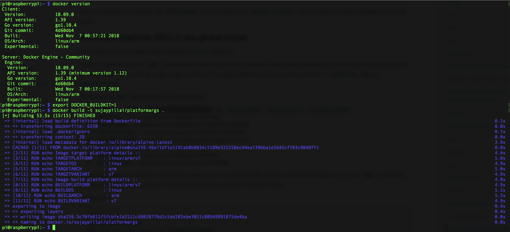

ARG a.k.a “build-time variable” can be used to pass a variable to builder with the docker build command using --build-arg <varname>=<value> flag
With the new engine 18.09 Docker supports a new backend BuildKit for executing your builds. You may switch to this backend by setting the below environment variable on your CLI -
|
|
With this new backend Docker predefines a set of ARG variables with the information pertaining to the platform of the node performing the build (build platform) and the resulting image (target platform)
The following ARG variables are set automatically:
| ARG | Description |
|---|---|
| TARGETPLATFORM | Platform for which the image is being build e.g. linux/amd64, linux/arm/v7, windows/amd64. |
| TARGETOS | The OS value for the target platform e.g. (linux, windows) |
| TARGETARCH | CPU Architecture of the target platform. |
| TARGETVARIANT | Variant of the CPU e.g. v7 to specify ARMv7 when architecture is arm. |
| BUILDPLATFORM | Platform of the node performing the build. |
| BUILDOS | The OS value for node performing the build. |
| BUILDARCH | CPU Architecture of the build platform. |
| BUILDVARIANT | Variant of the CPU for build platform |
These arguments are defined in the global scope so are not automatically available inside build stages or for your RUN commands. To expose one of these arguments inside the build stage redefine it without value as shown in below example:
Consider the below Dockerfile where we have all the above predefined ARG’s redefined
I carried out this build on a RaspberryPi to show all the values of above ARG’s:

Read more about this here from Docker Documentation.